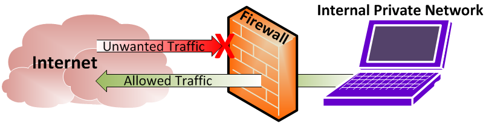

By Katelyn Ingram
A firewall is a system designed to prevent unauthorised access to and from a private network. You can either use it in hardware form, or software form, or a combination of both.
All messages entering or leaving the internet pass through the firewall, which examines each message and blocks any that don't meet the security criteria.
- Firewalls that are used to protect both home and corporate networks.
- A firewall software/hardware device that filters all information coming through the internet to your network or computer system.
- A firewall protects your computer from unauthorise remote access.
- Firewalls can make online gaming safer.
- You can implement web filtering measures with a firewall.